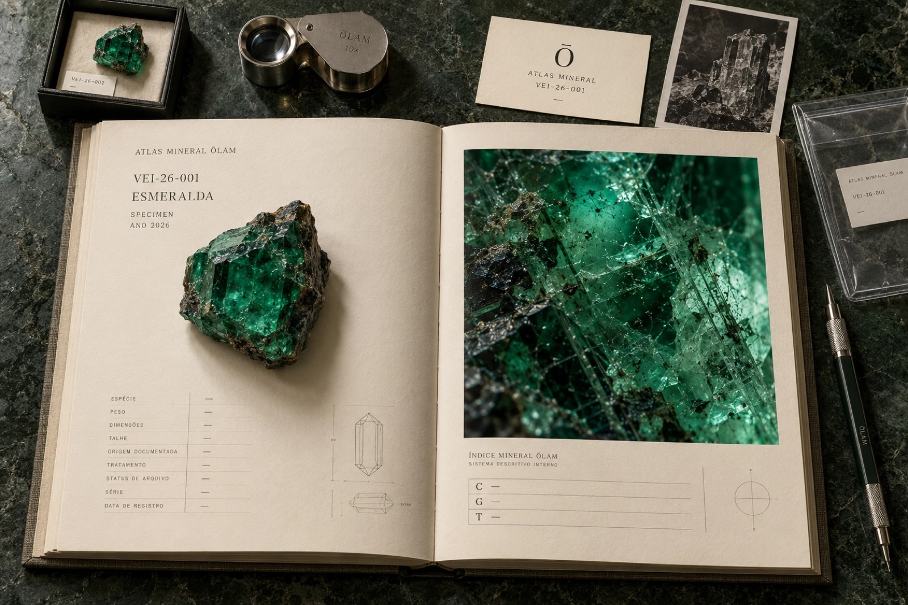

ŌLAM
Objetos em ouro e pedras preciosas.
Tempo. Matéria. Permanência.
Ouro é tempo solidificado.
Forma antecede desejo.
Matéria antecede linguagem.
Feito sob demanda.
ŌLAM
Matéria
Matéria antecede linguagem.
Séries
Capítulos permanentes da casa.
Objetos
Cada objeto existe antes de estar disponível.
Atlas Mineral
A pedra antecede o objeto. O Atlas registra aquilo que existia antes da joia.
